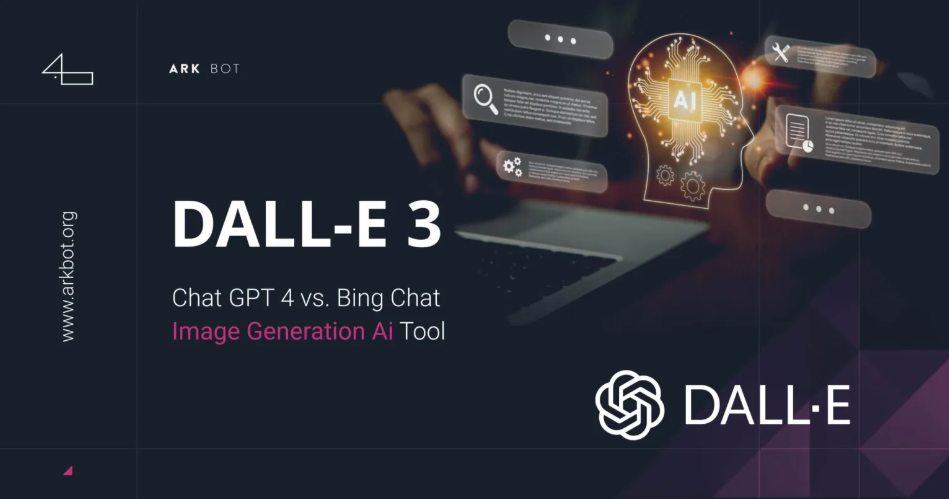

Trình Tạo Hình Ảnh🖼️
- Các mô hình tạo hình ảnh AI thế hệ có thể tạo hình ảnh mới và tùy chỉnh hình ảnh thực và được tạo để cung cấp cho bạn đầu ra mong muốn. Ví dụ, bạn có thể muốn tạo ra một hình ảnh của một đứa trẻ với một cuốn sách trong tay cô ấy. Hơn nữa, bạn có thể muốn thay đổi màu của bìa sách trong hình ảnh được tạo.
- 📖 Chúng ta hãy xem xét một số khả năng của các mô hình tạo hình ảnh. Bản dịch hình ảnh sang hình ảnh đề cập đến việc chuyển đổi một hình ảnh từ miền này sang miền khác trong khi bảo tồn vật chất và phong cách ban đầu. Ví dụ, chuyển đổi bản phác thảo thành hình ảnh thực tế, chuyển đổi hình ảnh vệ tinh thành bản đồ, chuyển đổi hình ảnh camera an ninh thành hình ảnh độ phân giải cao hơn và tăng cường chi tiết và hình ảnh y tế. Chuyển và hợp nhất kiểu liên quan đến việc trích xuất phong cách từ hình ảnh này và áp dụng nó sang một hình ảnh khác, tạo ra hình ảnh lai hoặc hợp nhất, ví dụ, chuyển đổi một bức tranh thành một bức ảnh.
- Inpainting đề cập đến việc xây dựng lại các phần bị thiếu hoặc bị hư hỏng của hình ảnh để làm cho nó hoàn thành. Bạn có thể sử dụng điều này để phục hồi nghệ thuật, pháp y, loại bỏ các vật thể và hình ảnh không mong muốn trong khi bảo tồn tính liên tục và bối cảnh, và pha trộn Đối tượng ảo vào các cảnh trong thế giới thực và thực tế tăng cường.
- Outpainting liên quan đến việc mở rộng hình ảnh gốc bằng cách tạo các phần mới cho nó giống như các phần mở rộng của bản gốc. Điều này có thể được sử dụng để tạo hình ảnh lớn hơn, tăng cường độ phân giải và tạo tầm nhìn toàn cảnh. Khả năng tạo hình ảnh và sửa đổi của các mô hình và công cụ tổng quát đã phát triển với sự phát triển của các mô hình cung cấp năng lượng cho chúng.
- Nhiều trình tạo hình ảnh AI thế hệ cũng có thể Được tích hợp dưới dạng API để nhúng chức năng và khả năng của chúng vào các chương trình và công cụ phần mềm khác nhau. Một số trình tạo hình ảnh phổ biến cung cấp các API bao gồm Dall-E, Midjourney và Craiyon. Những người khổng lồ công nghệ như Microsoft và Adobe cũng đã bước vào thế giới của các trình tạo hình ảnh AI. Người tạo hình ảnh Microsoft Bing dựa trên mô hình Dall-E. Bạn có thể truy cập công cụ này bằng cách điều hướng đến Bing.com/create hoặc thông qua Microsoft Edge. Điều này làm cho Microsoft Edge trở thành trình duyệt đầu tiên với trình tạo hình ảnh AI tích hợp. Adobe Firefly là một gia đình các công cụ AI tổng quát được thiết kế để tích hợp với các ứng dụng đám mây sáng tạo của Adobe, như Photoshop và Illustrator.
🤖Dall-E của Openai dựa trên mô hình GPT. Được đào tạo trên các bộ dữ liệu hình ảnh lớn hơn và mô tả văn bản của chúng, Dall-E có thể tạo ra hình ảnh có độ phân giải cao trong nhiều kiểu, bao gồm hình ảnh và bức tranh quang học. Dall-E đã phát triển trong các phiên bản mới của Dall-E cung cấp các khả năng để tạo ra nhiều biến thể hình ảnh và chuyển đổi hình ảnh thông qua việc inpainting và vượt trội. Khuếch tán ổn định là một văn bản nguồn mở cho mô hình khuếch tán hình ảnh. Các mô hình khuếch tán là các mô hình tổng quát có thể tạo ra hình ảnh độ phân giải cao. Sự khuếch tán ổn định chủ yếu là Được sử dụng để tạo hình ảnh dựa trên lời nhắc văn bản. Mặc dù nó cũng có thể được sử dụng cho hình ảnh để dịch hình ảnh inpainting và outpainting.
Các mô hình và công cụ dựa trên AI tổng quát có thể tạo ra hình ảnh mới thông qua cả lời nhắc văn bản và hình ảnh. Họ cũng cung cấp các khả năng cho dịch hình ảnh sang hình ảnh, chuyển giao phong cách inpainting hoặc outpainting. Một vài mô hình tạo hình ảnh nổi bật bao gồm Dall-E, khuếch tán ổn định và Stylegan. Có một số công cụ tạo hình ảnh có sẵn cung cấp các khả năng đa dạng để tạo hình ảnh và chuyển đổi.